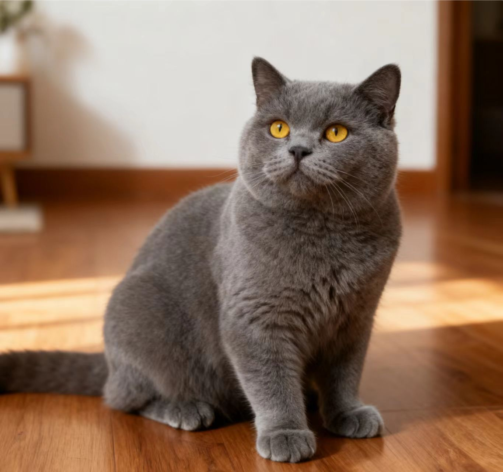
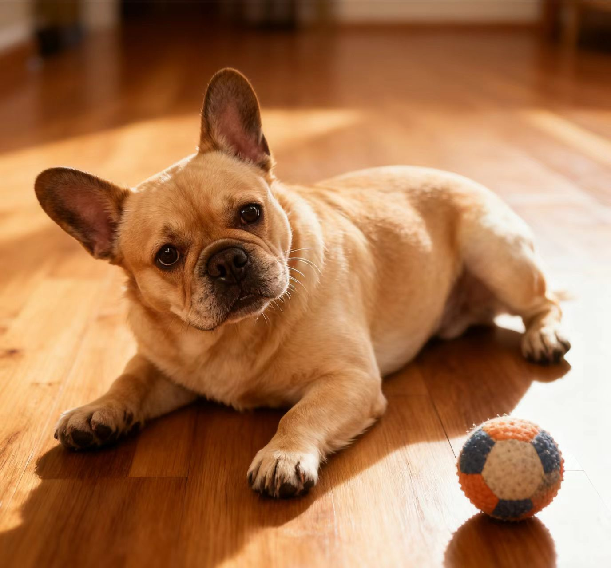
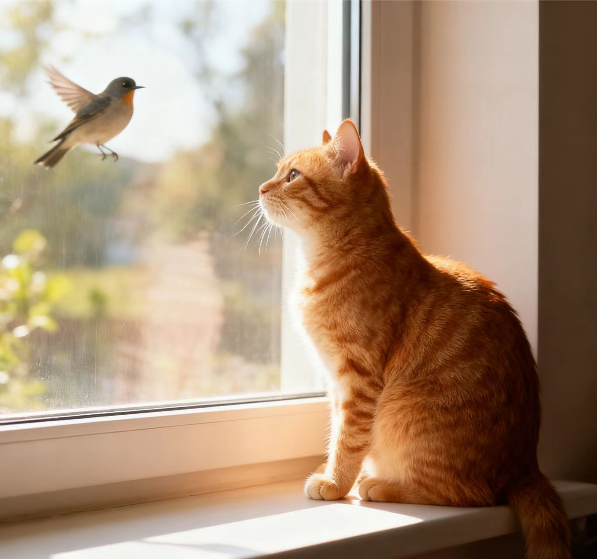
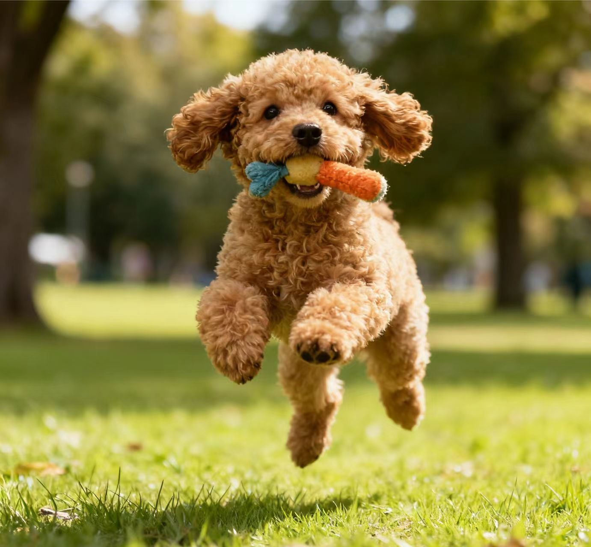

萌宠救助中心
首页
关于我们
待领养
志愿者
捐助支持
搜索
登录
注册
类型：
全部
猫咪
狗狗
年龄：
幼年
成年
老年
体型：
小型
中型
大型

奶茶 · 母 · 2 岁
已绝育 · 疫苗齐全 · 性格温柔安静
从小区地下车库救助回来的猫咪，已经完全适应家庭生活，喜欢晒太阳和被轻轻抚摸。
查看详情

雪球 · 公 · 8 个月
已驱虫 · 正在完成疫苗程序
活泼外向的小狗狗，喜欢和人互动，需要有时间陪伴的家庭，不建议长期无人陪伴。
查看详情

阿灰 · 公 · 4 岁
大型犬 · 已绝育 · 适合有经验家庭
在工地被救助，经过长期训练后性格稳定，对人友善，需要规律运动与科学管理。
查看详情

豆豆 · 母 · 5 岁
温顺 · 安静 · 适合陪伴老人
曾经的弃养狗狗，对新的环境略显谨慎，但适应后非常依赖人类，希望找到一位耐心的主人。
查看详情
领养流程概览
填写《领养申请表》，初步了解领养人情况和养宠经验。
与领养顾问进行沟通匹配，推荐适合的动物。
完成家访与试养期，确保彼此适应。
签署《领养协议》，按约定进行回访与跟进。
领养小提示
请提前与家人充分沟通，确保全家都同意领养。
合理安排时间与预算，为动物提供稳定的照顾。
不接受未成年人、短期在本市停留或频繁搬家的申请。
如遇突发情况不能继续饲养，请务必联系中心协助处理。